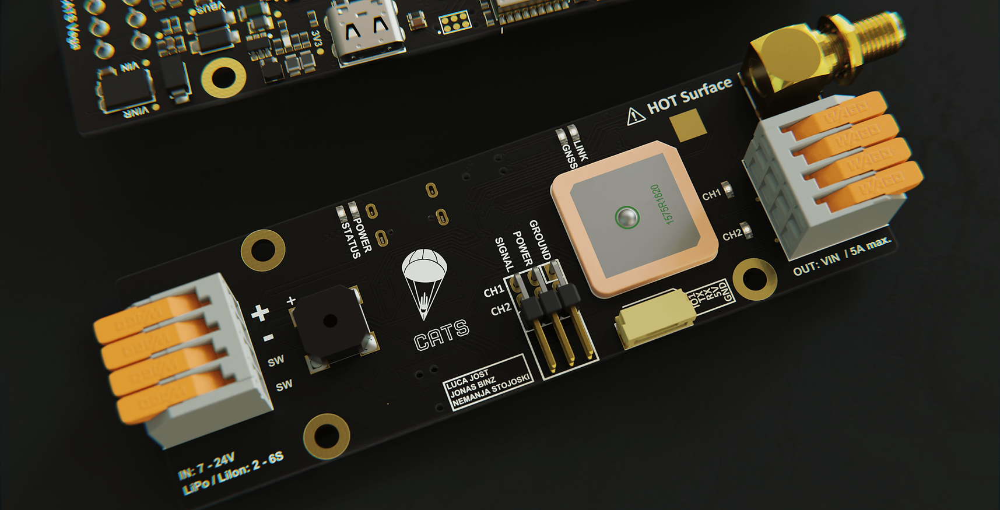
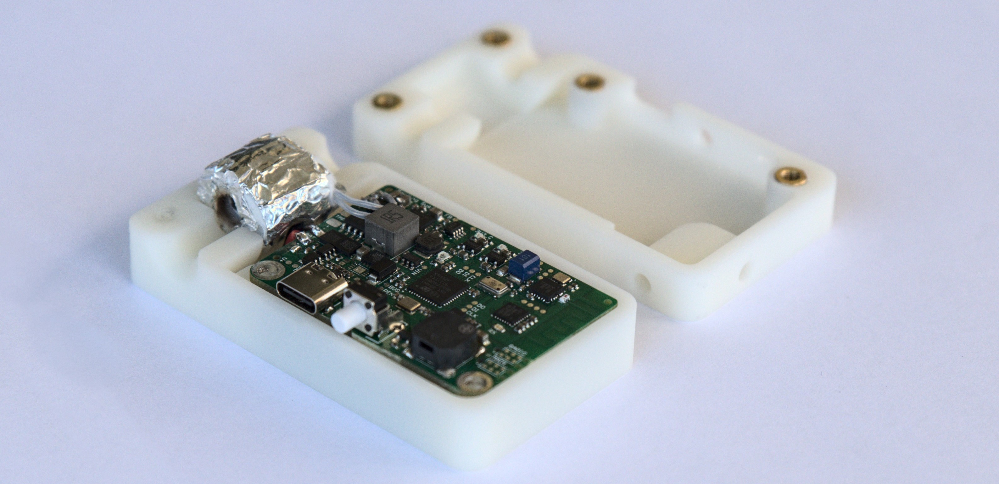
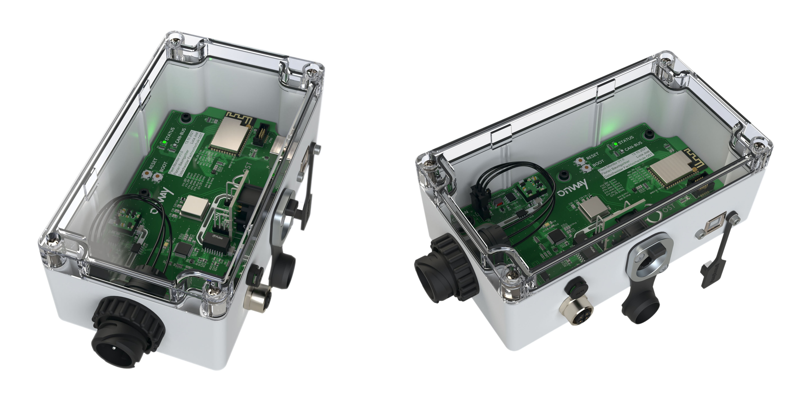

Sounding Rocket Flight Computers
Personal Company Project - 2020-2023
To recovery model rockets, a parachute needs to be ejected at the correct time. For this to happen a flight computer is needed to continuously read out altitude data and calculate the deployment point. Since no good recovery hardware is available on the market a new, redundant, and reliable computer needs to be developed.
Rendering of the CATS Vega flight computer
Technology
Based around a STM32 microcontroller the software utilizes a Kalman Filter to fuse together sensor data to get accurate velocity and altitude information. Over a self-developed telemetry protocol, using FHSS and LoRa, data can be sent to the ground. High power output channels can switch valves or pyrotechnics. Additionally, servo motor channels were added to allow the user to set the device up as he likes. Over USB and with a Electron desktop application the user can easily change the device settings.
Interactive Board Viewer
Parachute Reefing System for Sounding Rockets
Bachelor Thesis in collaboration with ARIS - 2022
The association Akademische Raumfahrt Initiative Schweiz (ARIS) brings together students from Swiss universities interested in space exploration. Several rockets have been built over the years for student competitions and research. The rockets built by ARIS are fully reusable, as they are recovered by parachute. With the rockets getting larger and heavier with each passing year, a solution to reduce the shock loads at parachute opening is needed. Consequently, the development of an active parachute reefing system was proposed.
Technology
The reefing line is guided through a ceramic heating element and gets burned through at a target altitude. Once the reefing line is cut, the parachute can fully open. A custom hardware was developed to drive the heating element, receive data over a telemetry link and process sensor data. The system is based around a STM32 microcontroller and a Kalman Filter was developed and deployed to estimate the rocket velocity and altitude. The system is battery operated and lasts for a few months in standby.
Reefing System Hardware
Fleet Monitoring System
Semester Thesis in collaboration with Onway AG - 2021
The company Onway AG is interested in providing an elegant solution for public transport fleets (e.g. buses) to gather low-level vehicle data and transmit them to a cloud-based system. This information can then be used to monitor the state of the vehicle and inform about possible issues in real-time.
Renderings of the Fleet Monitoring System
Technology
The system is based around an ESP32-S2 system on chip. The device connects directly to the CAN-Bus, collects and filters incoming data, and forwards it to a host device over Ethernet or WiFi. Additionally, an accelerometer was added to monitor information about the driving performance. A file system was implemented to easily access the configuration. The configuration can be uploaded via the USB port or over the air.